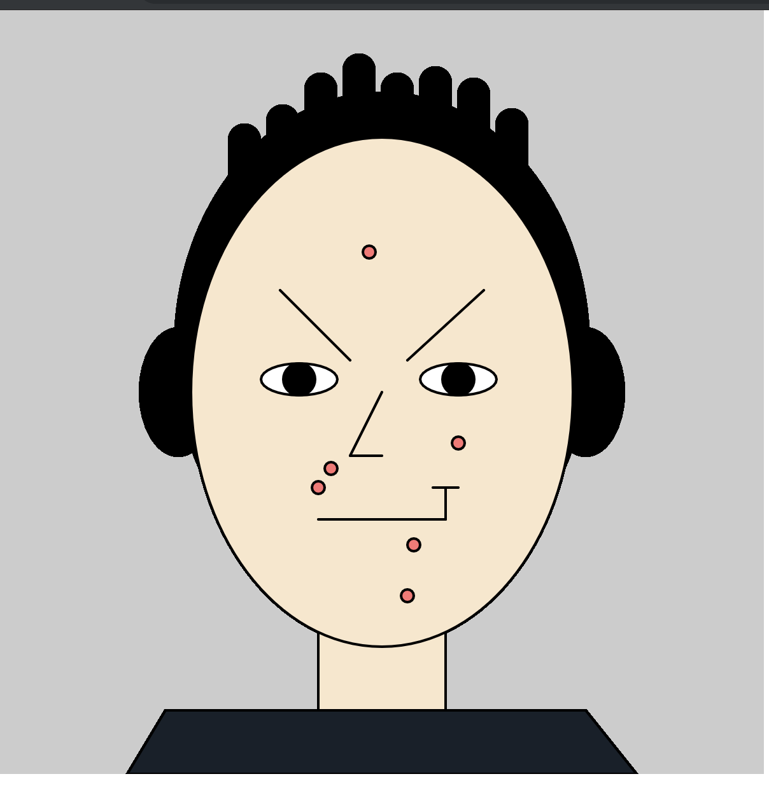

Processing Self Portrait
Self portrait made from p5.js code
p5.js code: function setup() { createCanvas(600, 600); strokeWeight(2); background(204); } function draw(){ fill(0) ellipse(140, 300, 60, 100) ellipse(460, 300, 60, 100) ellipse(300, 265, 325, 400); fill(0) rect(180, 90, 24, 200, 425, 244, 102, 482); rect(210, 75, 24, 200, 425, 244, 102, 482); rect(240, 50, 24, 200, 425, 244, 102, 482); rect(270, 35, 24, 200, 425, 244, 102, 482); rect(300, 50, 24, 200, 425, 244, 102, 482); rect(330, 45, 24, 200, 425, 244, 102, 482); rect(360, 54, 24, 200, 425, 244, 102, 482); rect(390, 78, 24, 200, 425, 244, 102, 482); fill(249, 231, 203); //orange color of neck and face rect(250, 350, 100, 400); ellipse(300, 300, 300, 400); fill(23, 32, 42); //gray shirt color quad(100, 600, 500, 600, 460, 550, 130, 550); line(220,220,275,275); line(380,220,320,275); fill(255, 255, 255); //white iris ellipse(235, 290, 60, 25); ellipse(360, 290, 60, 25); fill(0); //black pupils ellipse(360, 290, 25, 25); ellipse(235, 290, 25, 25); line(250,400,350,400); //bottom lip line(350, 400, 350, 375) //upwards smirk line(340, 375, 360, 375) line(275, 350, 300, 300) line(275, 350, 300, 350) fill(255, 115, 115); //pimples ellipse(260, 360, 10, 10); ellipse(290, 190, 10, 10); ellipse(320, 460, 10, 10); ellipse(325, 420, 10, 10); ellipse(360, 340, 10, 10); ellipse(250, 375, 10, 10); }
